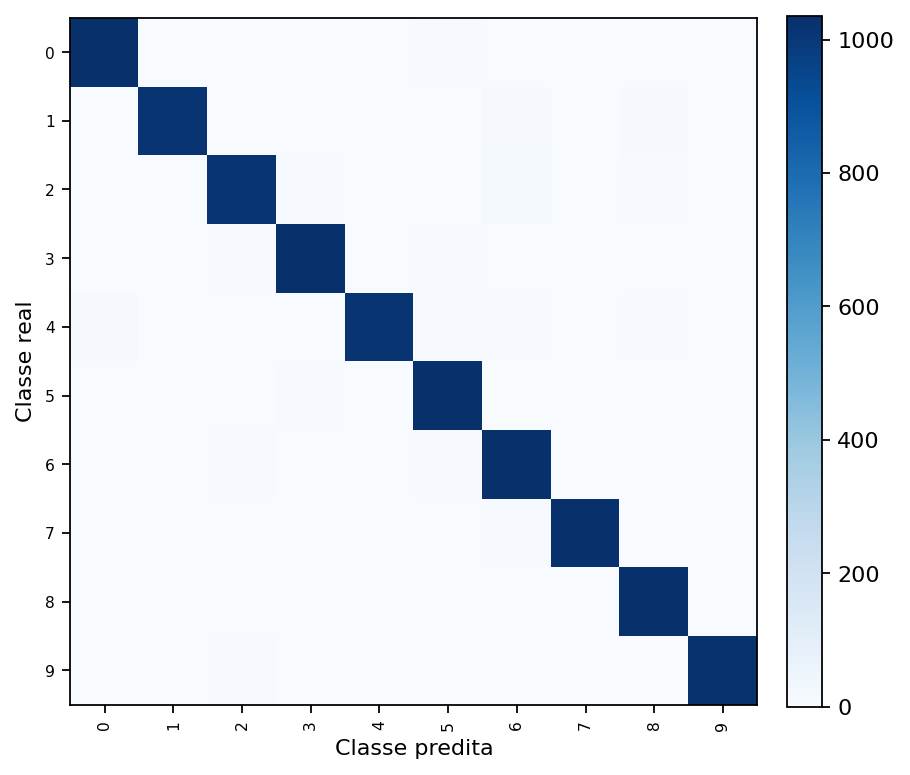
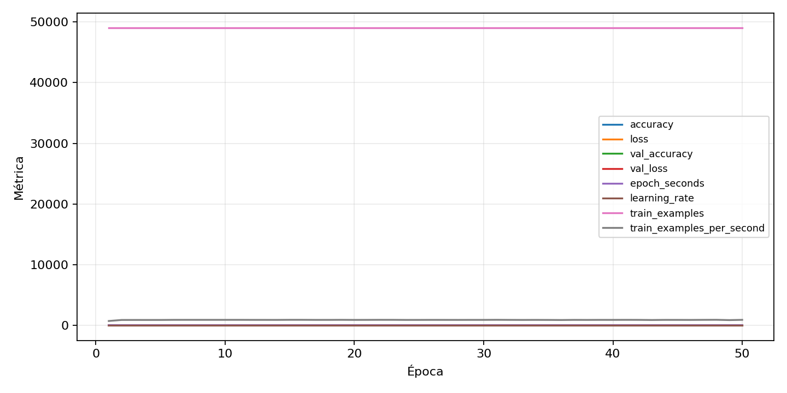

| n_samples | 10500 |
|---|---|
| loss | 0.13612651824951172 |
| accuracy | 0.9764761904761905 |
| balanced_accuracy | 0.9764761904761906 |
| macro_f1 | 0.9764933092546881 |


| Índice | Classe | Suporte | Precisão | Recall | F1 |
|---|---|---|---|---|---|
| 0 | 0 | 1050 | 0.9828080229226361 | 0.98 | 0.9814020028612304 |
| 1 | 1 | 1050 | 0.9863813229571985 | 0.9657142857142857 | 0.9759384023099135 |
| 2 | 2 | 1050 | 0.975 | 0.9657142857142857 | 0.970334928229665 |
| 3 | 3 | 1050 | 0.9773584905660377 | 0.9866666666666667 | 0.9819905213270141 |
| 4 | 4 | 1050 | 0.9769008662175168 | 0.9666666666666667 | 0.9717568214456678 |
| 5 | 5 | 1050 | 0.9662288930581614 | 0.9809523809523809 | 0.9735349716446124 |
| 6 | 6 | 1050 | 0.9537892791127541 | 0.9828571428571429 | 0.9681050656660413 |
| 7 | 7 | 1050 | 0.9846743295019157 | 0.979047619047619 | 0.9818529130850048 |
| 8 | 8 | 1050 | 0.9689849624060151 | 0.981904761904762 | 0.9754020813623463 |
| 9 | 9 | 1050 | 0.9941747572815534 | 0.9752380952380952 | 0.9846153846153846 |
{"adapter":"kmnist","balance_mode":"all_raw","class_names":["0","1","2","3","4","5","6","7","8","9"],"dataset":"kmnist","dataset_options":{},"dataset_root":"/home/msduda/datasets-tcc/kmnist","native_channels":1,"normalization":"unit_interval","num_classes":10,"protocol":{"checkpoint_monitor":"val_macro_f1","dtype_policy":"mixed_float16","early_stopping":{"patience":50,"restore_best_weights":true},"evaluation_augmentation":false,"input_channels":"native","optimizer":"Adam","pretrained_weights":false,"reduce_lr_on_plateau":{"factor":0.3,"min_lr":1e-07,"patience":50},"resize":"proportional_padding","test_time_augmentation":false,"training_from_scratch":true},"seed":42,"source_fingerprint":"8928d478d8d23938a73b4f4a92c407bf3d74beff1e0e67e3644d6ecdc30cf828","source_manifest":{"class_names":["0","1","2","3","4","5","6","7","8","9"],"joined_samples":70000,"metadata":{"layout":"kmnist-component-npz"},"name":"kmnist","native_channels":1,"source_path":"/home/msduda/datasets-tcc/kmnist","splits":{"test":10000,"train":60000},"target_size":64},"target_size":64,"test_fraction":0.15,"train_fraction":0.7,"training":{"augmentation":{"brightness_delta":0.0,"contrast_lower":1.0,"contrast_upper":1.0,"cutout_max_frac":0.0,"cutout_prob":0.0,"flip_lr":false,"noise_std":0.0,"translate_frac":0.0,"zoom_max":1.0,"zoom_min":1.0},"batch_size":192,"default_image_size":64,"dtype_policy":"mixed_float16","early_stopping_patience":50,"extra_fraction":0.0,"image_size_overrides":{"gtsrb":128},"keras_verbose":1,"learning_rate":0.0003,"max_epochs":50,"preprocess_cache_max_mib":0,"reduce_lr_factor":0.3,"reduce_lr_min_lr":1e-07,"reduce_lr_patience":50,"shuffle_buffer_max_mib":0},"validation_fraction":0.15}
{"epochs_completed":50,"epochs_recorded":50,"evaluation_seconds":21.37432350999734,"fit_seconds_current_attempt":3279.028896841999,"max_epoch_seconds":66.29324347099828,"max_epochs":50,"mean_epoch_seconds":53.45443252975994,"mean_train_examples_per_second":917.6279093697708,"median_train_examples_per_second":922.0296792942745,"min_epoch_seconds":52.34265773000516,"selected_checkpoint":"/mnt/e/tcc-benchmark/outputs/kmnist-alldata-noaug-batch-sweep-2026-08-06/batch-192/kmnist/runs/kmnist__unit_interval__all_raw__seed-42/checkpoints/best.keras","total_seconds":2672.721626487997,"training_seconds":2672.721626487997,"wall_seconds_current_attempt":3303.943504416002}
{"elapsed_seconds":3303.9996423299963,"event_counts":{"data_preparation_end":1,"data_preparation_start":1,"epoch_end":50,"evaluation_end":1,"evaluation_start":1,"fit_end":1,"fit_start":1,"periodic":652,"run_completed":1,"train_start":1},"generated_at":"2026-08-07T13:19:18.602+00:00","gpu_backend":"pynvml","interval_seconds":5.0,"metrics":{"cpu_percent":{"count":710,"max":17.2,"mean":12.904647887323943,"min":0.0,"p50":12.9,"p95":16.4},"disk_data_free_bytes":{"count":710,"max":998271229952.0,"mean":998271164583.3014,"min":998271156224.0,"p50":998271164416.0,"p95":998271164416.0},"disk_data_percent":{"count":710,"max":2.7,"mean":2.7,"min":2.7,"p50":2.7,"p95":2.7},"disk_data_total_bytes":{"count":710,"max":1081101176832.0,"mean":1081101176832.0,"min":1081101176832.0,"p50":1081101176832.0,"p95":1081101176832.0},"disk_data_used_bytes":{"count":710,"max":27837665280.0,"mean":27837656920.698593,"min":27837591552.0,"p50":27837657088.0,"p95":27837657088.0},"disk_output_free_bytes":{"count":710,"max":207297908736.0,"mean":207284962479.95493,"min":207284011008.0,"p50":207284355072.0,"p95":207285137408.0},"disk_output_percent":{"count":710,"max":79.3,"mean":79.3,"min":79.3,"p50":79.3,"p95":79.3},"disk_output_total_bytes":{"count":710,"max":1000186310656.0,"mean":1000186310656.0,"min":1000186310656.0,"p50":1000186310656.0,"p95":1000186310656.0},"disk_output_used_bytes":{"count":710,"max":792902299648.0,"mean":792901348176.045,"min":792888401920.0,"p50":792901955584.0,"p95":792902209536.0},"elapsed_seconds":{"count":710,"max":3303.935915,"mean":1655.5150879042253,"min":0.030603,"p50":1653.565927,"p95":3153.08570075},"gpu_count":{"count":710,"max":1.0,"mean":1.0,"min":1.0,"p50":1.0,"p95":1.0},"gpu_memory_percent":{"count":710,"max":34.83223915100098,"mean":34.61695711377641,"min":30.063533782958984,"p50":34.61251258850098,"p95":34.75136756896973},"gpu_memory_total_bytes":{"count":710,"max":8589934592.0,"mean":8589934592.0,"min":8589934592.0,"p50":8589934592.0,"p95":8589934592.0},"gpu_memory_used_bytes":{"count":710,"max":2992066560.0,"mean":2973573973.8140845,"min":2582437888.0,"p50":2973192192.0,"p95":2985119744.0},"gpu_temperature_c":{"count":710,"max":49.0,"mean":40.86619718309859,"min":37.0,"p50":40.0,"p95":48.0},"gpu_utilization_percent":{"count":710,"max":98.0,"mean":19.56338028169014,"min":0.0,"p50":10.0,"p95":50.0},"process_cpu_percent":{"count":710,"max":222.8,"mean":168.30239436619718,"min":0.0,"p50":160.8,"p95":213.81},"process_read_bytes":{"count":710,"max":11251712.0,"mean":11224153.41971831,"min":7933952.0,"p50":11251712.0,"p95":11251712.0},"process_rss_bytes":{"count":710,"max":4178292736.0,"mean":3815472730.861972,"min":1029857280.0,"p50":3874881536.0,"p95":4149918310.4},"process_vms_bytes":{"count":710,"max":48868118528.0,"mean":48424261112.788734,"min":39580524544.0,"p50":48516481024.0,"p95":48785965056.0},"process_write_bytes":{"count":710,"max":1146880.0,"mean":1134263.166197183,"min":4096.0,"p50":1146880.0,"p95":1146880.0},"ram_available_bytes":{"count":710,"max":15524999168.0,"mean":12899867662.422535,"min":12537950208.0,"p50":12840589312.0,"p95":13565671833.6},"ram_percent":{"count":710,"max":24.6,"mean":22.379718309859154,"min":6.6,"p50":22.7,"p95":24.4},"ram_total_bytes":{"count":710,"max":16619077632.0,"mean":16619077632.0,"min":16619077632.0,"p50":16619077632.0,"p95":16619077632.0},"ram_used_bytes":{"count":710,"max":4081127424.0,"mean":3719209969.5774646,"min":1094078464.0,"p50":3778488320.0,"p95":4056220057.6}},"sample_count":710,"schema_version":1}